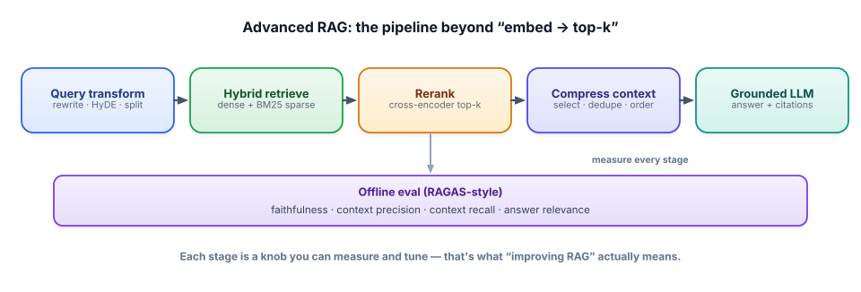

Advanced RAG
Track 3 got you a working, grounded RAG system. This lesson covers what you reach for when “embed and take the top k” isn’t good enough — query transformation, reranking, context curation, and the rigorous evaluation that tells you which change actually helped.
A good librarian does not just search for the exact words you said. If you ask "that book about the boy wizard's school", they try a few phrasings, guess the title, check two shelves, then hand you only the two pages that matter instead of the whole stack. That is query rewriting, multi-query, HyDE, reranking and compression. The analogy breaks because the librarian knows when a guess is silly; HyDE's made-up answer can confidently point the search in the wrong direction.
Why basic RAG plateaus
A first RAG build usually works on easy questions and then stalls on real ones. The reasons are predictable: the user’s question is phrased differently from the documents (so embedding similarity misses), the right chunk is retrieved but buried among weak ones (so the model overlooks it), or several relevant chunks are needed and the top k grabs only one. Advanced RAG is a set of targeted fixes for these specific failures — and crucially, a way to measure whether each fix worked. Every technique below is a knob; the eval is how you know which knob to turn.

1 · Fix the query before you search
Retrieval quality is capped by the query you embed. Query transformation improves the question before it ever hits the index:
Rewriting turns a messy or conversational question into a clean search query (“why’s it broken since the update?” → “errors after version 2.0 upgrade”). Multi-query generates several phrasings, retrieves for each, and merges the results — catching documents that only match one wording. Decomposition splits a multi-part question (“compare the refund and warranty policies”) into sub-questions retrieved separately. HyDE (Hypothetical Document Embeddings) asks the model to draft a fake ideal answer, then embeds that to search — because a hypothetical answer often sits closer in embedding space to the real documents than the short question does.
Here’s multi-query with simple rank fusion, on the free local stack:
# Ask the LLM for 3 rephrasings, retrieve each, then fuse with Reciprocal Rank Fusion.
variants = generate_rephrasings(question, n=3) # an Ollama call returning a list[str]
scores = {}
for q in [question] + variants:
for rank, chunk_id in enumerate(retrieve(q, k=10)):
scores[chunk_id] = scores.get(chunk_id, 0) + 1 / (60 + rank) # RRF
top = sorted(scores, key=scores.get, reverse=True)[:5]Reciprocal Rank Fusion rewards chunks that rank highly across several queries, which is exactly the signal you want. The cost is extra LLM and retrieval calls — a real latency/quality trade-off you should measure, not assume.
2 · Retrieve broadly, then rerank precisely
Your vector search uses a bi-encoder: it embeds the query and each document separately, which is fast (you precompute document vectors) but approximate. A cross-encoder reranker reads the query and a candidate document together and scores their relevance directly — far more accurate, but far too slow to run over a whole corpus. The standard pattern resolves the tension: retrieve a generous top k (say 25) cheaply with the bi-encoder, then rerank just those 25 with the cross-encoder and keep the best 5. You get cross-encoder accuracy at bi-encoder scale.
Rerankers don’t require a paid API. A small open cross-encoder (e.g. cross-encoder/ms-marco-MiniLM via sentence-transformers) runs on CPU and meaningfully lifts precision. Add it, then check the eval — sometimes a reranker helps more than a fancier embedding model, for less effort.
3 · Curate the context window
More retrieved text is not better. Two effects bite: models exhibit “lost in the middle” — they attend best to the start and end of the context and can miss facts buried in the middle — and irrelevant chunks actively distract, lowering faithfulness. So order matters (put the strongest chunks first and last), deduplicate near-identical passages, and consider compression: trim each chunk to the sentences that actually bear on the question (an extractive step, or a cheap LLM pass) before handing it to the generator. Less, but better, context usually beats stuffing the window — and it’s cheaper.
4 · Measure it like an engineer
You can’t improve what you don’t measure, and RAG has two failure surfaces that need separate metrics. Retrieval quality: context recall (did we fetch the chunks that contain the answer?) and context precision (how much of what we fetched was relevant?). Generation quality: faithfulness (is every claim supported by the retrieved context, i.e. no hallucination?) and answer relevance (did it actually address the question?). This four-metric view (popularized by RAGAS) is powerful because it localizes the problem: low recall means fix retrieval; high recall but low faithfulness means fix generation/grounding. Build this on the golden-set + LLM-judge foundation from Track 6 — it works with free local models.
Assumptions: 200,000 questions a day, a rewrite model at $2 / $10 per million input / output tokens (claude-sonnet-5-5, Anthropic models overview, checked 2026-11-03), retrieval at about 15 ms per search, 10 retrieved chunks of 400 tokens each.
- Multi-query cost. One rewrite call returns 3 variants: about 250 input and 90 output tokens. 250 x $2 / 1 M = $0.0005; 90 x $10 / 1 M = $0.0009. Total $0.0014 per question, $280 a day.
- Multi-query latency. The 4 searches (original + 3) run in parallel, so retrieval stays near 15 ms. The real cost is the rewrite call itself, which adds a model round trip, typically hundreds of milliseconds (measure it). That is often the deciding factor for chat UX.
- Compression saving. 10 chunks x 400 = 4,000 context tokens. An extractive step that keeps only the sentences relevant to the question, say down to 1,200 tokens, saves 2,800 tokens per call: 2,800 x $2 / 1 M = $0.0056 per question, $1,120 a day.
- Net. Compression with a local extractive model pays for multi-query four times over: $1,120 saved versus $280 spent, net about $840 a day.
- The risk to measure. Compression can cut the one sentence that held the answer. Re-run context recall after compression on the golden set; if it drops from 0.91 to 0.84, the saving is buying wrong answers.
Each technique is a line in a spreadsheet and a line in the eval. Turn on one at a time.
- Advanced RAG = targeted fixes for specific failures, each measured, not guessed.
- Query transformation (rewrite, multi-query, decomposition, HyDE) improves the question before retrieval.
- Retrieve broadly (bi-encoder) then rerank (cross-encoder) for accuracy at scale — free/local rerankers work well.
- Curate context: order strongest first/last (“lost in the middle”), dedupe, and compress — less but better.
- Measure four things — context recall, context precision, faithfulness, answer relevance — to localize the fix.
Your RAG system scores high context recall (0.9) but low faithfulness (0.6) — it fetches the right documents, yet the answers contain unsupported claims. Diagnose where the problem is and list three changes you’d try first.
▸ Show solution & reasoning
Diagnosis: retrieval is fine — high recall means the answer-bearing chunks are present. The failure is in generation/grounding: the model has the right context but isn’t staying anchored to it. Throwing a better embedding model or more retrieval at this would waste effort, because the metric tells you the problem is downstream.
Three first fixes: (1) tighten the grounding prompt — instruct “answer using ONLY the context; if it’s not there, say you don’t know,” which directly attacks unsupported claims. (2) Require citations per claim and (optionally) verify each sentence maps to a chunk — citation pressure reduces fabrication. (3) Curate the context — remove distracting/duplicate chunks and reorder so the strongest are first/last, reducing “lost in the middle” drift. A fourth, if needed: lower temperature for the generation step. Then re-run faithfulness to confirm it moved.
Why this is the senior move: you used the metrics to localize the fault before touching anything, then applied the cheapest targeted fixes and re-measured. That diagnose-then-treat loop — not a pile of simultaneous changes — is exactly what interviewers and teammates want to see.
Why is the standard pattern “retrieve top-25 with the embedding model, then rerank to top-5 with a cross-encoder,” rather than cross-encoding the whole corpus?
What separates 'advanced' RAG from the basic embed→top-k pipeline?
When is HyDE (embedding a hypothetical answer instead of the question) most likely to hurt retrieval?
At small scale you can compare a query against every vector (exact search). At millions of documents that’s too slow, so production systems use an approximate nearest neighbor (ANN) index — most commonly HNSW, a navigable graph that finds very-close vectors in roughly logarithmic time. The trade is a tunable sliver of recall for an enormous speedup; parameters like HNSW’s ef_search let you dial the accuracy/latency balance, and — being a measurable knob — you set it by watching recall, not by guessing. This is where your data-engineering instincts pay off directly: it’s an index-tuning problem like any other.
Three more production realities round it out. Metadata filtering (by tenant, date, permissions) must combine with vector search, which shapes your index and store choice — and pre- vs post-filtering has real recall implications. Freshness means incremental indexing and re-embedding as documents change, plus handling deletes and duplicates, exactly the pipeline hygiene you already do for warehouses. And cost compounds: embedding millions of chunks, storing vectors, and re-embedding on model upgrades are budget items you plan for. None of this is exotic — it’s data engineering applied to vectors, which is precisely why your background is an advantage here.
labs/03_rag_local.pyFree and offline once set up: Ollama with qwen2.5:7b, plus the packages in labs/README.md. From the course folder:
python labs/03_rag_local.pyWhat to look for: The lab fuses dense and BM25 results with Reciprocal Rank Fusion, which is the same fusion step multi-query uses. To see multi-query, write two or three rephrasings of a golden question by hand, retrieve for each, and fuse with the lab's RRF function: check whether the right chunk ranks higher than with the original wording alone. The lab does not do HyDE or compression; for metrics on any change, run 06_evals before and after.
Small samples: these labs use 5 to 20 cases so they run in minutes on a laptop. Where they report a rate, they print n and a 95% Wilson interval. Read them as a demonstration of the mechanism, not as a measured rate for your system; for that you need hundreds of cases and several seeds.
▸ Recorded output (our run, 2026-11-03, qwen2.5:7b on a laptop GPU)
out of the top 3. On this tiny corpus dense already wins; hybrid earns its keep on big corpora full of
near-identical codes (SKUs, error ids) that embeddings blur. Never assume: measure hit@k (lab 06).
5) Grounded answers with citations, and a refusal when retrieval is weak
Q: I was charged twice for one order. What happens now?
A: If you were charged twice for one order, the duplicate payment is reversed automatically within 3 business days [pay-01#0]. If it is not reversed after 3 business days, raise a billing ticket with both transaction ids.
citations=['pay-01#0'] all-cited-ids-were-retrieved=True
Q: Can I change my delivery address after the order has shipped?
A: No, you cannot change your delivery address after the order has shipped. According to [ship-03#0], the address can only be changed before the order is packed.
citations=['ship-03#0'] all-cited-ids-were-retrieved=True
Q: Do you deliver to Antarctica by drone?
A: I don't know based on our policies. (refused before calling the LLM: best cosine 0.27 < 0.35)
citations=[] all-cited-ids-were-retrieved=True
Look: every factual sentence carries an id you can check; the off-topic question is refused
cheaply by the retrieval threshold, so the model never gets a chance to make something up.Your numbers will differ a little run to run. Full log: labs/outputs. Source: labs/03_rag_local.py.
Warm-up. You have 6 reranked chunks, scores 0.95, 0.91, 0.80, 0.62, 0.55, 0.41. Given lost-in-the-middle, in what order do you place them in the prompt, and would you include all six?
▸ Solution
Put the strongest at the edges and the weakest in the middle: for example 0.95 first, 0.91 last, then 0.80 second and 0.62 second-to-last, leaving 0.55 and 0.41 in the middle. Better still, test dropping the last two: a chunk scoring 0.41 is often noise that lowers faithfulness. Keep or drop based on the eval, not on the rule of thumb.
Transfer. In a chat, the user first asks about the Pro plan and then says "what about the EU one?" Retrieval for that second message returns junk. Fix it.
▸ Solution
Add conversational query rewriting: before retrieval, send the last few turns plus the new message to a model and ask for a standalone search query, here something like "Pro plan pricing in the EU region". Retrieve with that, answer with the full conversation. Log both the raw and rewritten query so you can debug. Evaluate with a multi-turn golden set; a single-turn set will never show this failure.
Stretch. You have time to try four upgrades: multi-query, HyDE, a reranker and compression. Design the experiment so you know which helped.
▸ Solution
Fix the golden set (300+ queries, sliced by type) and the judge. Measure the baseline: context recall, context precision, faithfulness, answer relevance, latency p95, cost per query. Then add one technique at a time on top of the baseline and measure each alone, followed by the best combination. Record a confidence interval per metric and only count a change as a win if it clears the noise. Expect interactions: the reranker raises context precision, compression can lower context recall, multi-query raises recall but costs latency. The output is a table of metric deltas against cost and latency, from which you pick, rather than shipping all four because each sounded good.
Junior What is query rewriting in RAG and why does it help?
▸ Model answer
Query rewriting uses a model to turn the user's raw message into a better search query before retrieval. Users write messy, conversational or context-dependent questions like "why is it broken since the update", while documents use formal terms. Rewriting can expand abbreviations, resolve references to earlier turns, and match document vocabulary, so the embedding lands nearer the right chunks. The cost is one extra model call, so you check that recall goes up enough to justify the latency.
Mid Explain the four RAGAS-style metrics and what each tells you to fix.
▸ Model answer
Context recall: did retrieval fetch the information needed to answer? Low means fix chunking, embeddings, query transformation or k. Context precision: was what we fetched relevant and ranked high? Low means add a reranker or retrieve fewer chunks. Faithfulness: is each claim in the answer supported by the context? Low means fix grounding, prompt and context order. Answer relevance: does the answer address the question? Low means the prompt or the context is pulling the answer off topic. The pair recall-plus-faithfulness localizes whether a fault is retrieval or generation.
Senior Retrieval quality is good in offline evals but poor in production. What could explain the gap?
▸ Model answer
Usually the golden set does not look like production. Real queries are shorter, multi-turn, misspelled, or use internal jargon the set lacks. The index may be stale or missing sources that production users ask about. Permission filters run in production but not offline, and selective filters can tank recall. Latency budgets may force a smaller k or skip the reranker in production. I sample and label recent production queries, slice metrics by type and tenant, compare offline and online configs line by line, and fold the failures into the golden set so the gap closes.
- Gao et al., Precise Zero-Shot Dense Retrieval without Relevance Labels (HyDE, 2022) - arXiv
- Liu et al., Lost in the Middle: How Language Models Use Long Contexts (2023) - arXiv
- Es et al., Ragas: Automated Evaluation of Retrieval Augmented Generation (2023) - arXiv
- Gao et al., Retrieval-Augmented Generation for Large Language Models: A Survey - arXiv
RAG can be tuned and measured to a high bar. Next, the same rigor applied to systems that take actions: advanced agents.